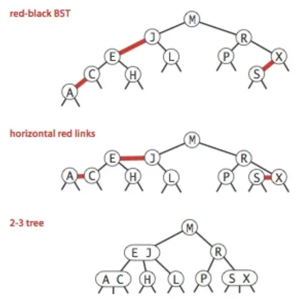
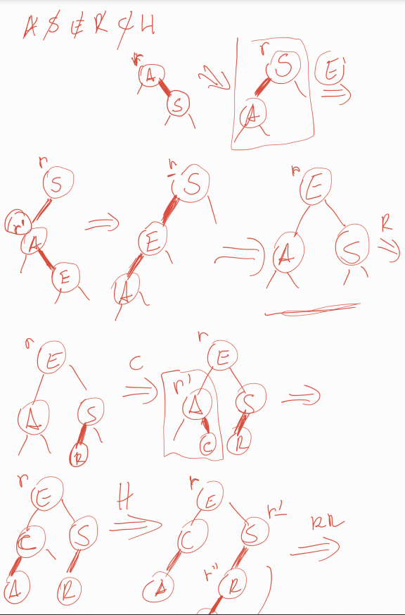

Árvores Rubro-Negras Esquerdistas (Left-Leaning Red-Black Trees - LLRBT)
1. Conceitos Gerais
As Árvores Rubro-Negras Esquerdistas (ARNE) são uma implementação específica de árvores rubro-negras que mantêm todos os links vermelhos inclinados para a esquerda, simplificando a implementação enquanto mantém as propriedades de balanceamento.
Princípio fundamental: Representação de árvores 2-3 usando árvores binárias com links coloridos: - Links negros: Links normais da árvore binária - Links vermelhos: Links "horizontais" que conectam nós do mesmo nível lógico (representando nós 3 da árvore 2-3)

Estrutura de uma BST Red Black
2. Estrutura de Dados
2.1 Definições e Macros
Definições básicas para ARNE:
typedef int Key; // Tipo da chave
// Estrutura do item (chave + dados)
typedef struct {
Key k; // Chave
// data d; // Dados associados (pode ser expandido)
} Item;
#define NULL_ITEM {0} // Item nulo
// Macros para manipulação de itens
#define key(A) ((A).k)
#define less(A, B) (key(A) < key(B))
#define eq(A, B) (key(A) == key(B))
// Cores dos links
#define RED 0
#define BLACK 1
2.2 Estrutura do Nó
Estrutura do nó da ARNE:
typedef struct STNode *link;
struct STNode {
Item item; // Item armazenado
link l; // Ponteiro para filho esquerdo
link r; // Ponteiro para filho direito
int N; // Tamanho da subárvore (nó atual + filhos)
int color; // Cor do link que aponta para este nó (RED ou BLACK)
};
// Variáveis globais
link h; // Raiz da árvore
link z; // Nó sentinela (representa folhas vazias/nulo)
3. Implementação das Operações
3.1 Inicialização e Utilidades
Inicialização e funções auxiliares:
// Criar um novo nó
link NEW(Item item, link l, link r, int N) {
link x = malloc(sizeof(struct STNode));
x->item = item;
x->l = l;
x->r = r;
x->N = N;
x->color = RED; // Novos nós começam com link rubro
return x;
}
// Inicializar a árvore
void ST_init() {
z = NEW(NULL_ITEM, NULL, NULL, 0); // Nó sentinela
z->color = BLACK; // Sentinela sempre negra
h = z; // Raiz inicial aponta para sentinela
}
// Verifica se um link é vermelho
int isRed(link x) {
if (x == z) return 0; // Links para sentinela são considerados negros
return x->color == RED;
}
// Retorna o número de nós da árvore
int ST_count() {
return h->N;
}
// Verifica se a árvore está vazia
int ST_empty() {
return h == z;
}
3.2 Operações de Rotação e Ajuste
- Rotação Esquerda (Anti-horária):|
- Usada quando há um link rubro à direita;
- Como funciona:
- Rotação para esquerda da subwarvore
- Continua vermelho
- Rotação Direita (Horária):
- Usada quando há dois links rubros consecutivos à esquerda;
- Como funciona:
- Rotaçao da subarvore para direita
- No superior fica vermelho
- Inversão de Cores:
- Simula a divisão de um nó triplo temporário em uma árvore 2-3;
- Remove a cor rubra dos dois filhos de um nó e torna o link que aponta para o nó rubro;
- Efeito: "Empurra" a cor rubra para cima na árvore;
Rotações e inversão de cores:
// Rotação esquerda (anti-horária)
link rotateLeft(link r) {
link x = r->r; // Filho direito sobe
r->r = x->l; // Adota subárvore esquerda de x
x->l = r; // r vira filho esquerdo de x
x->color = r->color; // Herda a cor de r
r->color = RED; // Novo link para r é rubro
x->N = r->N; // Atualiza contagem de nós
r->N = 1 + r->l->N + r->r->N; // Recalcula N para r
return x;
}
// Rotação direita (horária)
link rotateRight(link r) {
link x = r->l; // Filho esquerdo sobe
r->l = x->r; // Adota subárvore direita de x
x->r = r; // r vira filho direito de x
x->color = r->color; // Herda a cor de r
r->color = RED; // Novo link para r é rubro
x->N = r->N; // Atualiza contagem de nós
r->N = 1 + r->l->N + r->r->N; // Recalcula N para r
return x;
}
// Inversão de cores (split de nó 4)
void flipColors(link r) {
r->l->color = BLACK; // Filhos tornam-se negros
r->r->color = BLACK;
r->color = RED; // Link para r torna-se rubro
}
3.3 Inserção
3.3.1 Funcionamento
- Insere um novo nó com link rubro, simulando a adição em uma árvore 2-3;
- Ajusta a árvore com rotações e inversões de cores para manter as propriedades da ARNE;
- Casos:
- Nó simples: Novo nó é pendurado com link rubro (pode exigir ajustes);
- Nó duplo: Forma um nó triplo temporário, que é dividido com inversão de cores;
3.3.2 Passo a Passo
- Insere recursivamente como em uma BST, pendurando o novo nó com link rubro;
- Após a inserção, verifica violações das propriedades:
- Link rubro à direita: Rotação esquerda;
- Dois links rubros à esquerda: Rotação direita;
- Dois filhos rubros: Inversão de cores;
- Atualiza a contagem de nós (N);
- Garante que a raiz seja negra;
Inserção com balanceamento:
// Função pública de inserção
void ST_insert(Item item) {
h = insertR(h, item);
h->color = BLACK; // Raiz sempre negra
}
// Função recursiva de inserção
link insertR(link r, Item item) {
if (r == z) // Encontrou posição de inserção
return NEW(item, z, z, 1);
Key k = key(item);
Key t = key(r->item);
// Inserção recursiva
if (less(k, t)) {
r->l = insertR(r->l, item);
} else {
r->r = insertR(r->r, item);
}
// Balanceamento pós-inserção
r = fixUp(r);
r->N = 1 + r->l->N + r->r->N; // Atualiza contador
return r;
}
// Corrige violações das propriedades ARNE
link fixUp(link r) {
// Corrige link vermelho à direita
if (isRed(r->r) && !isRed(r->l))
r = rotateLeft(r);
// Corrige dois links vermelhos consecutivos à esquerda
if (isRed(r->l) && isRed(r->l->l))
r = rotateRight(r);
// Corrige dois filhos vermelhos (nó 4)
if (isRed(r->l) && isRed(r->r))
flipColors(r);
return r;
}
3.3.3 Inserção Manual

Exemplo: ASERCH
3.4 Busca
Busca recursiva:
// Função pública de busca
Item ST_search(Key k) {
return searchR(h, k);
}
// Função recursiva de busca
Item searchR(link r, Key k) {
if (r == z) // Não encontrado
return NULL_ITEM;
Key t = key(r->item);
if (eq(k, t))
return r->item;
else if (less(k, t))
return searchR(r->l, k);
else
return searchR(r->r, k);
}
3.5 Travessia e Ordenação
Travessia in-order:
// Função de visita
void visit(Item i) {
printf("%d ", key(i));
}
// Travessia in-order recursiva
void sortR(link r, void (*visit)(Item)) {
if (r == z) return;
sortR(r->l, visit); // Visita subárvore esquerda
visit(r->item); // Visita nó atual
sortR(r->r, visit); // Visita subárvore direita
}
// Função pública para ordenação
void ST_sort(void (*visit)(Item)) {
sortR(h, visit);
}
3.6 Exemplo de Uso
Exemplo de uso da ARNE:
int main() {
ST_init(); // Inicializa árvore
// Insere elementos: A S E R C H
Item items[] = {{1}, {19}, {5}, {18}, {3}, {8}};
char labels[] = {'A','S','E','R','C','H'};
for (int i = 0; i < 6; i++) {
ST_insert(items[i]);
printf("Inserido: %c (%d)\n", labels[i], key(items[i]));
}
printf("Número de nós: %d\n", ST_count());
printf("Elementos em ordem: ");
ST_sort(visit); // Imprime em ordem crescente
// Busca por uma chave
Key busca = 5;
Item resultado = ST_search(busca);
if (key(resultado) != 0) {
printf("\nEncontrado: %d\n", key(resultado));
} else {
printf("\nNão encontrado: %d\n", busca);
}
return 0;
}
4. Análise de Performance
4.1 Complexidade das Operações
| Operação | Melhor Caso | Caso Médio | Pior Caso |
|---|---|---|---|
| Busca | O(1) | O(log n) | O(log n) |
| Inserção | O(1) | O(log n) | O(log n) |
| Remoção | O(1) | O(log n) | O(log n) |
| Travessia | O(n) | O(n) | O(n) |
4.2 Propriedades de Balanceamento
- Altura máxima: ≤ 2 log₂(n + 1)
- Balanceamento perfeito: Todos os caminhos da raiz às folhas têm o mesmo número de links negros
- Links vermelhos: Nunca dois links vermelhos consecutivos e sempre inclinados à esquerda
4.3 Vantagens sobre BST Comum
- Balanceamento garantido: Sempre O(log n) para todas as operações
- Performance consistente: Não degrada com dados ordenados
- Eficiência de memória: Overhead mínimo (apenas 1 bit por nó para cor)
4.4 Comparação com Outras Estruturas
| Característica | BST Simples | Árvore 2-3 | ARNE |
|---|---|---|---|
| Balanceamento | Não garantido | Garantido | Garantido |
| Altura máxima | O(n) | O(log n) | O(log n) |
| Complexidade | Simples | Complexa | Moderada |
| Overhead | Baixo | Alto | Baixo |
5. Considerações Finais
5.1 Quando Usar ARNE
- Aplicações de alto desempenho: Onde O(log n) garantido é essencial
- Dados dinâmicos: Muitas inserções/remoções com busca frequente
- Memória limitada: Overhead menor que árvores 2-3
- Dados ordenados: Excelente resistência a sequências ordenadas
5.2 Aplicações Práticas
- Bancos de dados: Índices primários e secundários
- Sistemas de arquivos: Estruturas de diretórios
- Compiladores: Tabelas de símbolos eficientes
- Bibliotecas padrão: Implementação de mapas e conjuntos ordenados